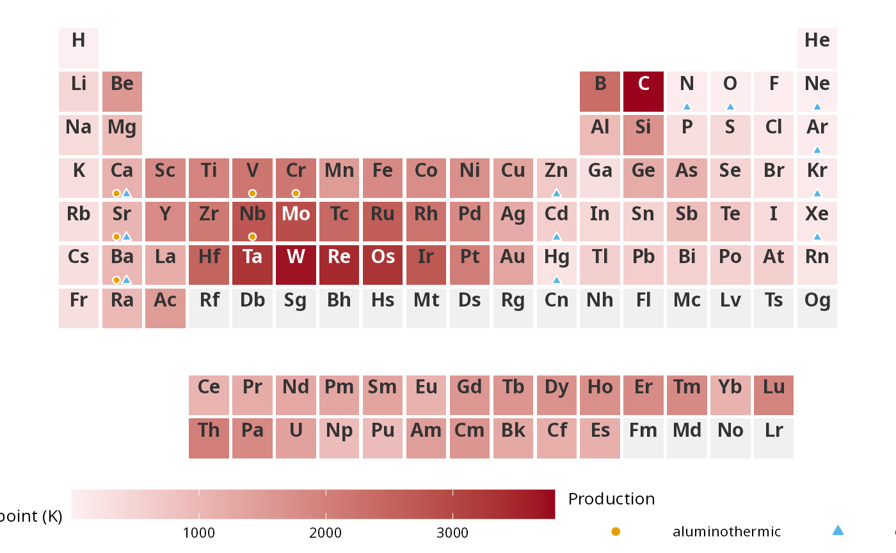

Draws small point symbols (pch) in the tiles of a plot created with
[ggPSE()], one symbol shape and colour per category. It is made for
yes/no style information that has to sit on top of another
encoding, for example marking all elements that are produced
aluminothermically or by distillation on a periodic table that is coloured by
abundance. An element can belong to several categories; it then gets one
marker per category.
Usage
ggPSE_symbols(
plot = NULL,
data,
category_col = "category",
symbol_col = "symbol",
pch = NULL,
colors = NULL,
size = 1.6,
move_text = TRUE,
position_nudge = 0,
halo = TRUE,
legend = TRUE,
legend_title = NULL
)Arguments
- plot
A plot created with [ggPSE()]. If
NULL, a blank periodic table is used.- data
A data frame with one row per element and category. An element that belongs to several categories appears in several rows, but can have at most four. Repeated rows are ignored; rows whose category is
NAor empty are dropped.- category_col
Character. Column in
datawith the category. Default"category". A factor keeps the order of its levels, other columns are sorted alphabetically. There is no limit to the number of categories, but an element can have at most four (seedata).- symbol_col
Character. Column in
datawith the element symbols. Default"symbol".- pch
Point shapes (whole numbers from 0 to 25, see
points), either a named vector (names = categories) or an unnamed vector in category order. Each category gets one shape, and together with its colour it is the marker of that category. DefaultNULL: shapes 21 (circle), 24 (triangle), 22 (square), 23 (diamond), 25 (inverted triangle) and 8 (star), repeated if there are more than six categories (the colours then still tell the categories apart).- colors
Colours, named by category or unnamed in category order. Each category gets one colour. Default
NULL: the colour-blind-safe Okabe-Ito palette used by [ggPSE()] for groups (further colours are added for more than seven categories).- size
Numeric. Marker size in ggplot2 point units. Default
1.6, the largest size at which four of the default shapes fit side by side (about 0.2 of a tile at 1 cm tile size). Larger values are reduced automatically if some element has so many markers that they would not fit into one row.- move_text
Logical. Move the element symbol up to the top of the tile (and the value label, if shown, to the middle) so that the bottom is free for the markers. Default
TRUE. Nothing is moved if the symbol is already at the top (symbol_position = "top"), and the plot you pass in is not changed. Asymbol_nudgeyou set is replaced by the new position. If the symbol is drawn at the bottom of the tile, a warning is given instead, because it would sit on the markers. The atomic number, if shown, stays where it is: it is drawn at the top left by default, so check that it does not overlap the symbol.- position_nudge
Numeric. Vertical shift of all markers in tile units (positive = up; a tile is 0.92 high). Default
0.- halo
Logical. Draw a white edge around the markers (see Details). Default
TRUE.- legend
Logical. Add a legend. Default
TRUE.- legend_title
Character. Legend title. Default: the name of
category_col.
Details
Layout. The markers sit in one row at the very bottom edge of
the tile, centred horizontally. An element can have at most four markers. Each
shape has its own measured width and height, so the gaps between neighbouring
markers are equal, the group is centred by its outer edges, and all markers
rest on the same bottom line, whatever their shapes. To make room, the element
symbol (and the value label, if there is one) is moved up (move_text =
TRUE); the same result as building the plot with symbol_position =
"top". If size is too large for the busiest tile, it is reduced with a
message. The spacing is calibrated for tiles of about 1 cm (e.g. a plot 20 cm
wide with the default base_size), like the text layout of [ggPSE()].
White edge. With halo = TRUE (the default) every marker has a
white edge, so it stays visible on dark or coloured tiles. For the filled shapes
21 to 25 the edge is the outline of the shape. All other shapes get a slightly
larger white copy drawn underneath.
Legend. A legend for the shapes and colours is added to the plot.
It uses ggplot2's shape scale, so call ggPSE_symbols() only
once per plot, and do not combine it with another layer that uses a shape
scale. Use legend = FALSE to suppress it.
Examples
# An illustrative selection (not a curated reference): elements whose metal
# is made by aluminothermic reduction, by distillation, or both.
prod <- data.frame(
symbol = c("Cr", "V", "Nb", "Ca", "Sr", "Ba",
"Hg", "Zn", "Cd", "Ca", "Sr", "Ba", "N", "O", "Ar", "Ne", "Kr", "Xe"),
category = c(rep("aluminothermic", 6), rep("distillation", 12))
)
ggPSE_symbols(ggPSE(), prod,
pch = c(aluminothermic = 24, distillation = 21),
colors = c(aluminothermic = "#D55E00", distillation = "#0072B2"),
legend_title = "Production")

# on top of a colour gradient the markers keep a white edge
data(ggpse_elements)
p <- ggPSE(ggpse_elements, value_col = "melting_point_K", label_value = FALSE,
legend_title = "Melting point (K)")
ggPSE_symbols(p, prod, legend_title = "Production")
